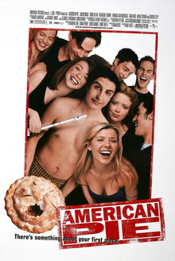
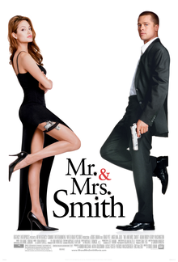
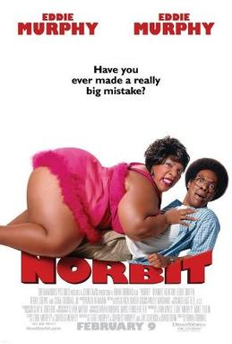
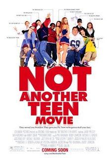
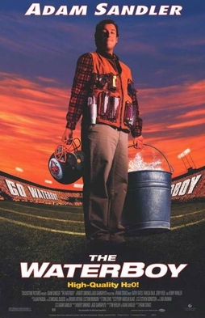

Rating: ★★★☆☆
The All American tale of freshman college students enjoying friends and forming new relationships with one another. A wild ride through the crazy world of college, adulthood, and memories that last a lifetime.
Rating: ★★★★★
A couple built off strong will, fight in the name of love. Smart, brave, and most importantly, intellegent, Mr. and Mrs. Smith dare to live life in full throddle. A non stop sexy thriler with twist and turns to keep you hanging on the edge of your seat.
Ratng:★★★★☆
Norbit, an orphan taken in by his childhood girlfriends family, is a regular hrdworking guy that hasonly one big probbem, his girlfriend. A comedy that will keep you laughing until the end.
Rating:★★★☆☆
With prom rght around the corner, a group of friends decide to take on the party with a ton of wild new ideas. A young girl, a painter, getting over the lost of her mother, prepares to take on college and joins the cool crowd for a night out at prom. A story you have to see to believe.
Rating: ★★★☆☆
From the sideines to the big leagues, Waterboy takes on the center field. Against his mothers wishes, he takes on the football field as one of the greatest football players of all time.